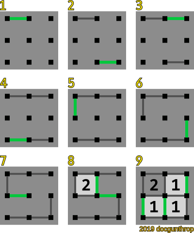

Dots and Boxes Validator
Points: 5 kyu
Kata ID: 5d81d8571c6411001a40ba66
Dots and Boxes is a game typically played by two players. It starts with an empty square grid of equally-spaced dots. Two players take turns adding a single horizontal or vertical line between two unjoined adjacent dots. A player who completes the fourth side of a 1 x 1 box earns one point and takes another turn. The game ends when no more lines can be placed.
Your task is to return the scores of the two players of a finished game.
Input
Your function will receive an array/tuple of integer pairs, each representing a link between two dots. Dots are denoted by a sequence of integers that increases left to right and top to bottom, like shown below.
for a 3 x 3 square
0 1 2
3 4 5
6 7 8
Output
Your function should return an array/tuple consisting of two non-negative integers representing the scores of both players.
Test Example
moves = ((0,1),(7,8),(1,2),(6,7),(0,3),(8,5),(3,4),(4,1),(4,5),(2,5),(7,4),(3,6))
dots_and_boxes(moves) # should return (3,1)
Additional Details
- All inputs will be valid
n x nboard size range:3 <= n <= 12- Full Test Suite:
10fixed tests and100random tests - Use Python 3+ for the Python translation
- For JavaScript,
moduleandrequireare disabled
If you enjoyed this kata, be sure to check out my other katas